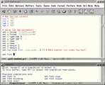

|
Chapters: 1: Introduction 2: Simple example 3: Invocation 4: Finer Control 5: X-Y Plots 6: Contour Plots 7: Image Plots 8: Examples 9: Gri Commands 10: Programming 11: Environment 12: Emacs Mode 13: History 14: Installation 15: Gri Bugs 16: Test Suite 17: Gri in Press 18: Acknowledgments 19: License Indices: Concepts Commands Variables |
12.2: Gri-mode screenshots, what it looks like.

gri-mode displays possible completions to entered text.
gri-mode displays help about the current command.
The pull-down menu listing all gri commands.
The `Perform' menu to run gri, preview, print...
|